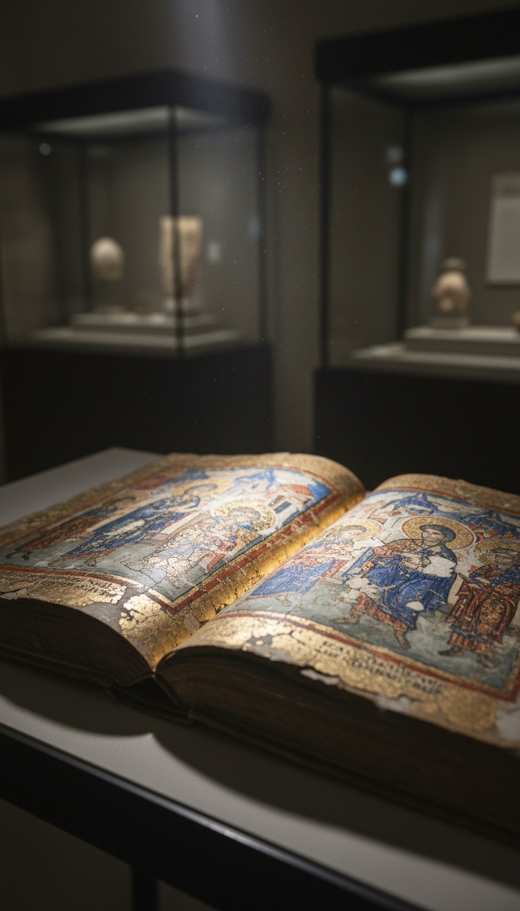

An emperor of Rome voted eternal hell into Christianity in 553 AD. Before that vote, the most credentialed theologian in the first three centuries of Christian history had spent his life arguing the opposite. His books sat in every major library from Alexandria to Antioch. His followers ran the church schools. Then one man with a crown decided the doctrine was inconvenient, called a council, and the text has been read the same way ever since.
This is not a suppressed gospel. It is not a hidden scroll. It is the publicly available Acts of the Fifth Ecumenical Council, preserved in the Mansi collection since the 18th century, sitting in university libraries. The doctrine of eternal torment did not emerge from the Gospels. It came from a vote. And the man who called the vote was an emperor, not a theologian.

The Theologian Rome Could Not Ignore
Origen of Alexandria was born around 184 AD into a Christian family in Roman Egypt. His father Leonidas was executed by Roman authorities in 202 AD for refusing to renounce his faith. Origen survived two additional rounds of Roman persecution, was tortured under Emperor Decius around 250 AD, and died from those injuries shortly after. He ran the Catechetical School of Alexandria at age eighteen. He produced more original Christian scholarship than any theologian of the first three centuries. Jerome, writing in the late 4th century, said Origen's literary output was impossible to count. Modern scholars estimate more than 2,000 works. Fragments of his Hexapla, a six-column parallel edition of the Hebrew scriptures produced in Caesarea Maritima around 240 AD, are still held in the Bodleian Library at Oxford. This was not a fringe voice operating on the margins of early Christianity. This was the center.
What Apokatastasis Actually Says
Origen's central cosmological argument was called apokatastasis. The Greek word means restoration: the return of a thing to its original state. The argument ran like this. God is infinite goodness. Infinite goodness cannot permanently sustain a condition of permanent torment without ceasing to be infinite goodness. Therefore every soul, across whatever duration of corrective suffering is necessary, will eventually be restored to union with God. Origen pulled this directly from the Apostle Paul. First Corinthians 15:28: "God will be all in all." Acts 3:21: "the restoration of all things." He pointed to the Greek word used throughout the Gospels for eternal. The word is aionios. It means "of the age" or "age-long." Not infinite. Origen was not inventing a reading. He was reading the Greek text in Greek, at a time when Greek was still a living language, in the city where the language was most alive.
Three Hundred Years of Mainstream Teaching
Origen's influence was not local and not brief. Gregory Thaumaturgus, who became bishop of Neocaesarea in Pontus on the Black Sea coast, studied directly under Origen in Caesarea Maritima in the 230s AD and carried the teaching north into Asia Minor. Gregory of Nyssa, one of the three Cappadocian Fathers who defined the Nicene Trinity at the First Council of Constantinople in 381 AD, was an explicit universalist. He wrote "On the Soul and the Resurrection" as a direct defense of apokatastasis and named his sister Macrina as his theological interlocutor in the text. The men who gave Western Christianity the Nicene Creed, the creed recited in Catholic and Protestant churches every Sunday to this day, included theologians who believed every soul eventually comes home. Demetrios Trakatellis at Harvard Divinity School has documented this continuity in detail. Three centuries of Christian orthodoxy looked at the same Gospels and saw a story with a universal ending.
Eternal torment required an emperor and a legal document to survive. Apokatastasis needed nothing but the text.
Justinian's Administrative Campaign
Justinian I became emperor of the Eastern Roman Empire in 527 AD. By 529 AD he had reorganized the entire corpus of Roman law into the Codex Justinianus. He moved on church doctrine with the same administrative efficiency he brought to legal reform. By 543 AD he had produced a document called the Edictum contra Origenem. Ten anathemas, issued under the emperor's name, targeting Origen's teaching on the preexistence of souls, the nature of the resurrection body, and the final restoration of all things. Justinian sent the document to Mennas, Patriarch of Constantinople, and demanded a signature. Mennas signed. The regional patriarchates followed. This was not a theological council weighing competing readings of scripture. It was a bureaucratic circular from a man who controlled the military, the courts, and the treasury, and who had decided a doctrine needed to end.
The Council of 553 AD
The Second Council of Constantinople opened on May 5, 553 AD. Pope Vigilius refused to attend. He was physically present in Constantinople the entire time. He boycotted the sessions. Justinian applied pressure for months until Vigilius produced a qualified endorsement. The council's nominal purpose was to resolve the Three Chapters controversy, a dispute about certain earlier theological writings. The council also produced fifteen anathemas targeting Origen specifically. Anathema XI reads: "If anyone says that the punishment of the demons and of impious men is only temporary, and will one day have an end, and that a restoration will take place of demons and of impious men, let him be anathema." That sentence is preserved in the Acts of the Fifth Ecumenical Council, in Greek, in the Mansi collection, Sacrorum Conciliorum Nova et Amplissima Collectio, volume 9. After May 553 AD, reading the Gospels as a story where everyone ultimately comes home was a heresy. Justinian made it one.
What the Vote Erased
After 553 AD you could not read First Corinthians 15:28 as a promise of universal completion. You could not argue that the lake of fire in Revelation served a purifying function without risking excommunication. You could not teach the Parable of the Prodigal Son as a story where the far country has a time limit. The text of the Gospels did not change after 553 AD. The Greek word aionios in Matthew 25:46 still meant what it meant in the second century. What changed was what you were permitted to conclude from it. William Barclay, the 20th century New Testament scholar whose commentaries and translations appear in Protestant seminaries to this day, wrote in his memoir "Testament of Faith" that he was a convinced universalist. He kept it quiet for most of his career. Metropolitan Kallistos Ware, who taught at Oxford and wrote the standard English-language introduction to Orthodox theology, said publicly before his death in 2022 that universal salvation was at minimum a permitted Christian hope. These were not radicals. They were reading the same text Origen read. The council of 553 AD told everyone to stop.
The question the council never answered: why does eternal punishment require a political vote to survive?
Origen's teaching spread without institutional enforcement for three hundred years because it matched what the Greek text produced when you read it straight. Eternal torment needed an emperor, a legal document, and a room full of bishops who refused to argue back. The fifteen Origenist anathemas of 553 AD do not carry unanimous ecumenical authority across every denomination. Several Eastern Orthodox theologians have argued the anathemas may lack full standing because the council's primary purpose was the Three Chapters, not Origen, and the pope boycotted it. The footnotes of church history are still open.
What the vote bought was seventeen centuries of certainty. Every sermon about hell. Every revival tent. Every missionary appeal to fear. Every deathbed conversion made under threat of permanent torment. All of it downstream of a document Justinian circulated in 543 AD and formalized in May 553. The text never changed. The permission to read it changed. And the people who voted on the permission are the same people who needed the fear to run an empire. Ask yourself what they were protecting. Ask yourself what Origen knew that required fifteen specific anathemas to silence. Eleven propositions, condemned by name, from a man who had been dead for three hundred years. You do not write that many laws against a ghost unless the ghost is winning.
Before you go
7 books the Vatican doesn't want you reading. Free PDF — the texts they cut, with sources. Joined by 140+ Inner Circle members.
No spam. Unsubscribe anytime.
Go deeper
The Hidden Canon, Vol. I — Enoch. Jubilees. Thomas. Mary. Judas. 90 pages, 14 chapters, every receipt cited. The books your Bible quietly removed.
Read the Canon →Books that informed this investigation
As an Amazon Associate, Hidden Epoch earns from qualifying purchases. Cost to you: nothing.
Research safely
The VPN we use to research without being tracked. First 3 months free.
Get NordVPN →